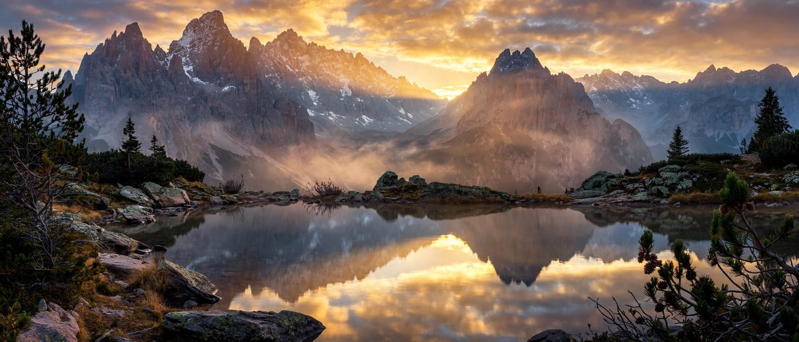

Preset Simulator
Tap a preset to preview its look on the sample photo below. Presets in Lightroom are saved combinations of color, light and tone adjustments — this simulator shows the same idea using photo filters. Use the brightness slider to fine-tune the result, just as you would after applying a preset.

filter: none;
Tip: A preset is a starting point, not a finished edit. After applying one in Lightroom, always adjust exposure and white balance for your own photo — the same preset looks different on every image. Read our guide to using presets and the best presets of 2026.